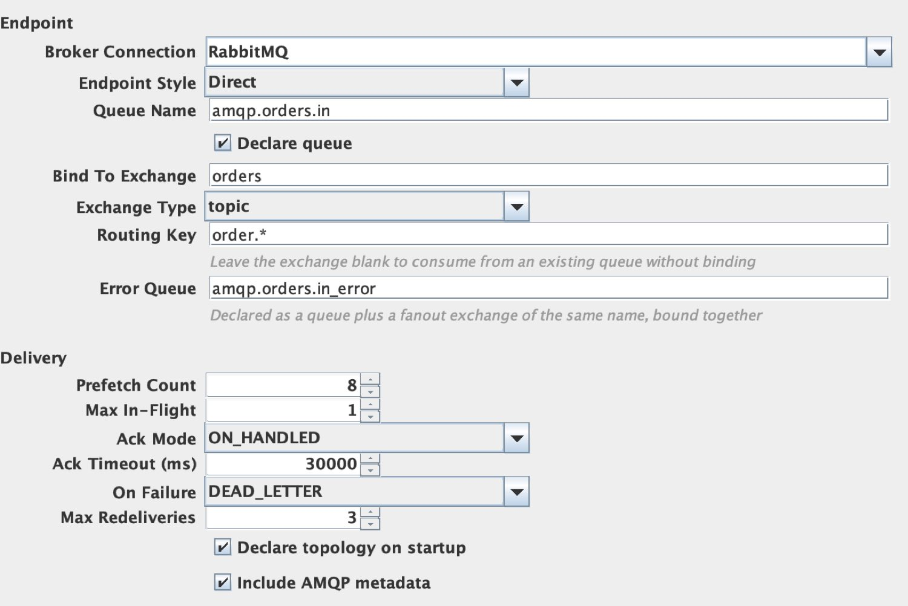
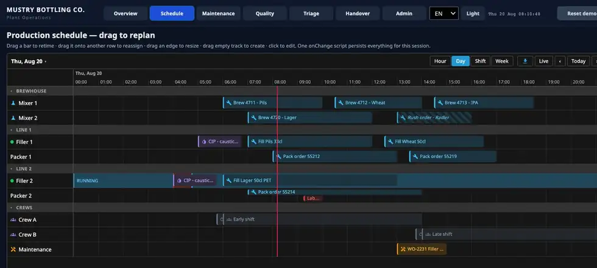
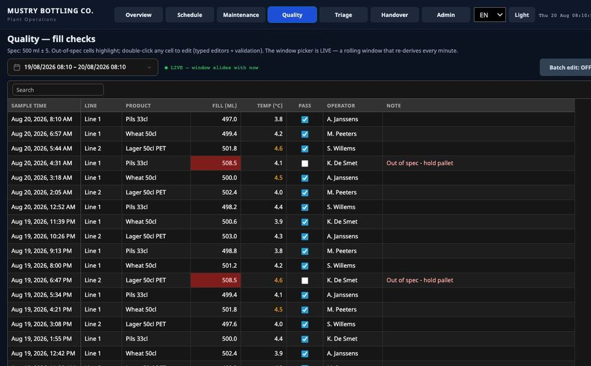
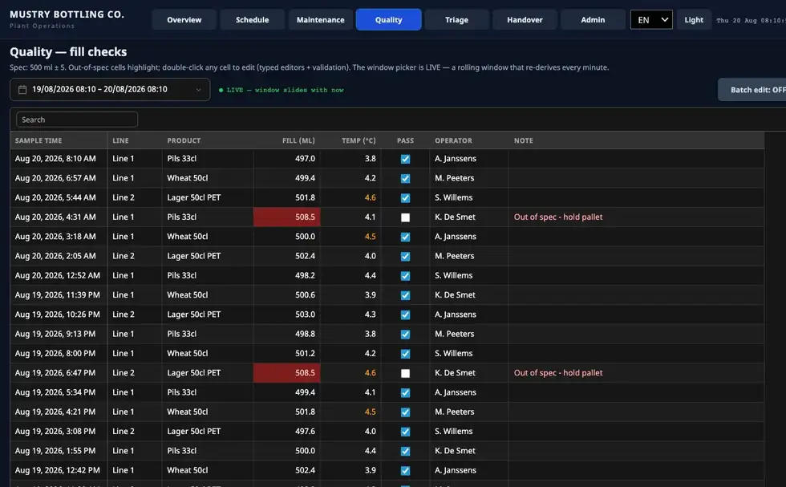
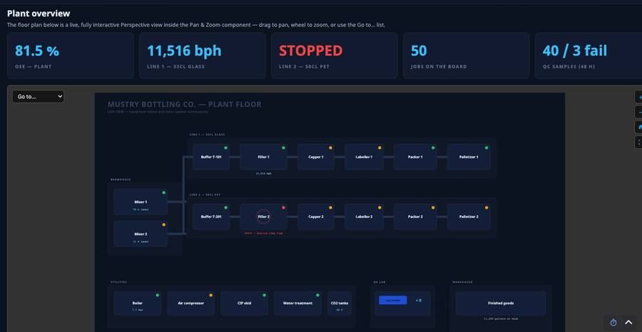
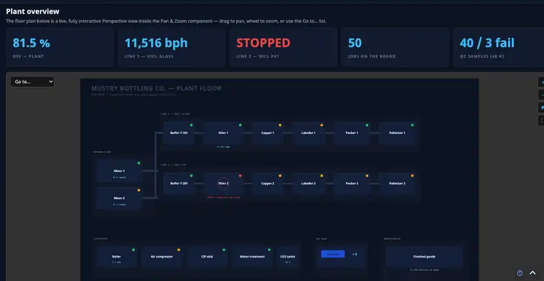
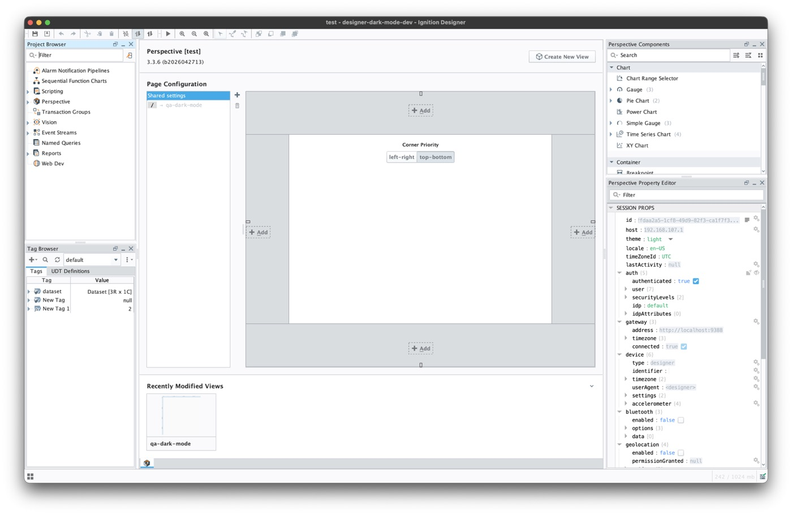
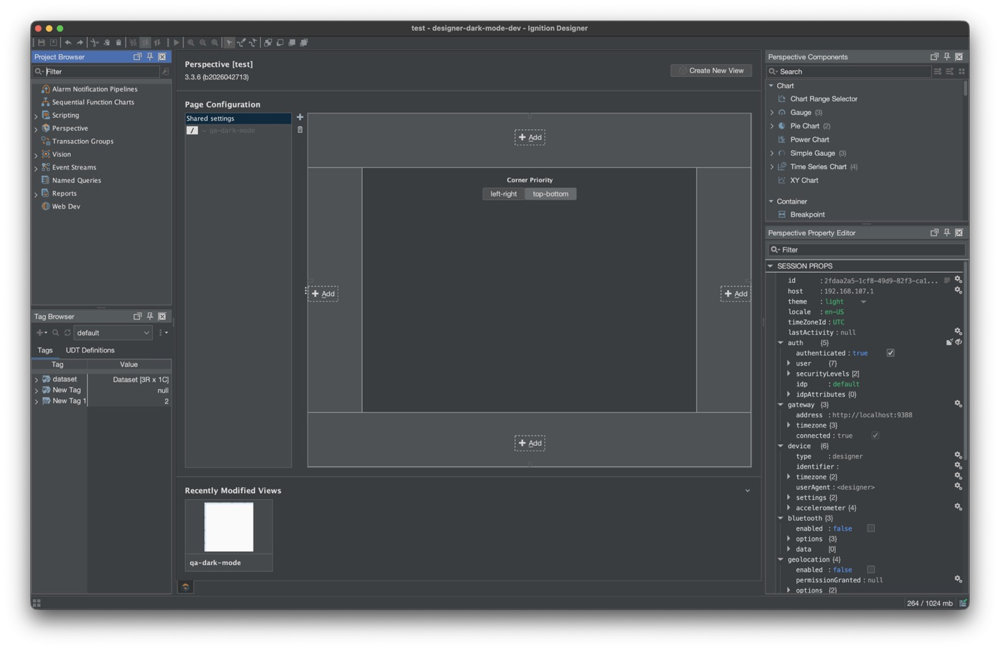

// Notes
Ignition modules for the gaps the platform leaves.
2026-09-22 · 6 min read · Ignition
Ignition is a strong platform. On almost every project I still end up building the same
missing pieces anyway: passwords pasted into the gateway, a RabbitMQ client living in
getGlobals(), tag history that crawls once retention gets serious, a gateway
that never shows up on the ops Grafana, alarm pages that stop at email, the same scheduler
and grid rebuilt in Perspective yet again, and a Designer stuck on one bright theme.
At Mustry those
became signed .modl files for Ignition 8.3. Install the one you need.
This page is the map. Each module has its own note below. Pricing, manuals and purchase
forms sit on the
product pages.
The modules
Same story every time: a plant builds something that works, the next site copies it, someone leaves, the script bitrots, and IT asks why the production password is still sitting in a gateway backup from 2019. A module on a real Ignition extension point beats another shared project library. Green labels are free and open source. Doom is free too, on purpose.








- Secrets. Database passwords, OPC accounts and script secrets resolve from HashiCorp Vault, Azure Key Vault, AWS Secrets Manager or Google Secret Manager. Caching, last-known-good fallback, and rotation without restarting the gateway. From €600. Read the note · Product page
-
Observability. Ninety-two curated gateway metrics plus logs over
OpenTelemetry to Grafana, Datadog, New Relic or Azure Monitor, or a Prometheus scrape on
:9464. Nowrapper.confsurgery. From €800. Read the note · Product page - Alarm notifications. Teams, Slack and generic webhooks as native alarm notification profiles, with acknowledgement, retry, fallback and a delivery audit trail. Read the note · Product page coming. The module is real; the public page is still catching up.
- TimescaleDB historian. Tag history on TimescaleDB hypertables for long retention and fast aggregates, while keeping the normal Ignition historian experience. From €3,000. Read the note · Product page
-
AMQP. Named RabbitMQ / AMQP 0-9-1 broker connections as gateway
config, plus Event Stream source and handler, scripting, and a MassTransit topology
preset. Replaces the “client in
getGlobals()” pattern. From €1,600. Read the note · Product page - Perspective components. Fourteen free Apache-2.0 components: resource timeline, calendar, editable data grid, pan-and-zoom plant view, branching diagram, and the Schedule / Roster / User / Holiday admin family Vision had and Perspective never got. Read the note · Product page
- Designer dark mode. Free FlatLaf dark theme for the Ignition 8.3 Designer. One item under Tools restyles docks, trees, tables, the Perspective palette, script editors and the console, then puts the stock theme back when you switch off. The choice survives the next launch. Read the note · Product page · GitHub
- Doom. Free GPL Perspective component that runs Doom inside SCADA. Tags fire the shotgun, alarms pause the marine, health lands in your historian. Industrially useless on purpose. Read the note · GitHub
Two numbers worth keeping
Designer dark mode, in pictures
Ignition ships the Designer light-only. Dark mode is still the most-requested Designer idea on Inductive Automation’s ideas portal. The module installs on the gateway once; every Designer that connects finds Tools → Dark Mode. Same project, same panels. Only the theme changed between these two captures from the dev gateway in the repo.

Dark mode off

Dark mode on
Real Designer captures · not a mock-up
Vision is the caveat worth knowing up front. A Vision window saved under a look-and-feel swap used to pick up FlatLaf colours and fonts a Vision client could not open. Current releases repair that at the serializer; the module still steers clear while you are deep in Vision work, and the status bar tells you why. If your day is mostly Vision windows, the Exchange Jython script remains the safer pick. Do not run both in the same project.
How they fit
None of this is a second platform. Each module plugs into something Ignition already has: secret providers, alarm notification profiles, historian providers, Event Streams, Perspective components, Designer scope. Config shows up where an Ignition engineer already looks. Paid ones use Ignition’s trial timer, then activate. Perspective Components, Designer Dark Mode and Doom are free.
They also will not invent your rotation policy or pick your Grafana dashboards for you. The job is narrower: stop every project reinventing the same glue.
How we ship them
Signed under the Mustry certificate chain. Drop the .modl on
Config → Modules on a stock 8.3 gateway. Manuals and release notes live on
each product page. Support and Basic Care are there if you want more than the download.
Most sites only need one. Start there. The rest are here when the next hole shows up.
Catalogue, manuals and trial requests are on the Mustry site.
Browse Ignition modules